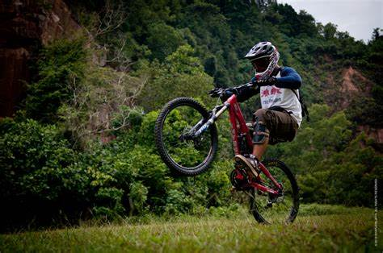
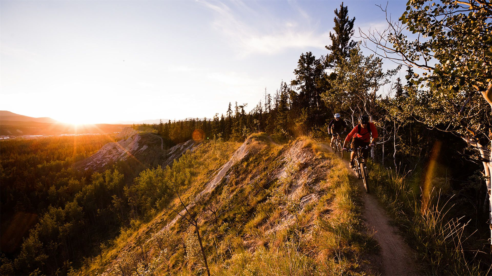
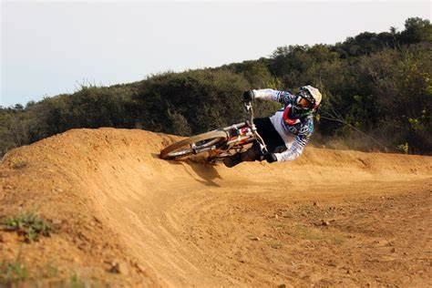
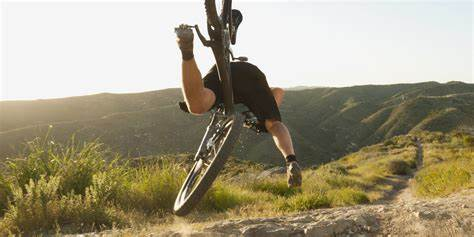

Mountain Biking 101 : THE NEED TO KNOW BASICS
If you’re starting out in the mountain bike world - welcome! You’ll want to understand the basics of mountain biking and apply these tips to your daily rides.
TRAIL ETIQUETTE
Before hitting the trails, it’s important to understand proper trail etiquette. Mountain biking is a addictive sport that requires trail infrastructure, community support and the help of volunteers to build those trails. Before saddling up, find out if you’re biking on a multi-use trail system and recognize that there may be other trail users other than mountain bikers. A few rules to follow:
BE FRIENDLY
Say “hi” to fellow riders, hikers, trail runners, horseback riders and so on.
LEAVE NO TRACE
For mountain bikers, “take only photographs, leave only tire marks" should apply to the leave no trace principle. Don’t leave garbage on the trail, don’t carve your name in trees or don’t create your own short cuts. Use the existing switchbacks an
YIELD
Be aware that mountain bikers usually need to yield to other trail users - pull over to the side of the trail and let runners and horseback riders pass - you’ll be happy you did, as spooking a horse might not end well. It’s also proper etiquette for downhill riders to yield to uphill riders. The reason? Well, riding uphill is challenging and once you’ve found your flow going up, you don’t want to stop.
RESPECT
Respect trail closures and trail signs - simply put, if a trail is closed, don’t ride it. The local mountain bike club probably closed it for a reason. Sensitive habitat, erosion, trail re-routing or a change in land ownership are just a few of the reasons the trail may be closed.
WILDLIFE
Remember, you’re in their environment. Be prepared to come across wildlife on your rides and respect their space. Try not to spook animals. Make noise constantly , especially around blind corners, it’s also a perfect time to test out your singing skills!
READ THE TRAIL
It’s important to read the trail when you’re mountain biking. What does this mean? Well, you should always know what’s ahead and prepare for roots, rocks, drops, jumps, and obstacles that are 15-20 feet ahead. Look where you want to go - not where you think you will fall! Think about ‘scanning’ the trail - and constantly scan the area from your front tire to 20 feet ahead.
BODY POSITION
The proper body position while riding can make or break your ride. After reading the trail, adjusting your weight is an important skill to ensure you don’t keel over the handle bars and you can tackle obstacles confidently. When riding, focus on the following body positions...
NEUTRAL POSITION:
When you’re riding non-technical sections of trail, you can find comfort and stability in the neutral position.
- slight bend in the elbows and knees
- look ahead on the trail about 15-20 feet
- index fingers ready on the brakes
- level pedals with even weight
- you can be seated
READY POSITION:
When the trail becomes steeper, rockier and more obstacles appear - it’s time to get READY! Ready position will help prepare to conquer those obstacles and is a more active position.
- deep bend in the elbows and knees
- shift your hips back and lift your butt off the seat
- look ahead on the trail about 15-20 feet
- index fingers ready on the brakes
SEAT POSITION
Adjusting your seat to different heights throughout your ride will help when ascending and descending.
CLIMBING:
- Adjust your seat to a higher position
- When your leg is fully extended, you should have a slight bend in your knee
- This will increase your efficiency
DESCENDING:
- get the most out of your downhill ride by lowering your seat 2-3 inches
- shift your weight backwards to lower your centre of gravity
- cover the brakes with your index fingers to ensure you can brake if needed
BRAKING
You should always be prepared to brake by having your index fingers ‘covering’ your front and rear brakes. Braking should be controlled and “light” - never try to slam on the brakes in hopes of recovering from a fall... as it could make things worse. It might sound counter-intuitive, but braking can actually help you bike faster. Use your brakes to control turns, and your momentum to speed you up. It’s about finding balance between braking, using your momentum and reading the trail.
PREPARING TO FALL
It’s inevitable - you will fall. And when you do, hopefully you will stand up tall after and shake it off. Then, hopefully you will proudly show off your bruises and scars. If you’re not falling off your mountain bike, you’re not challenging yourself - and in the long run that’s part of becoming a better rider. Be prepared to fall with the proper gear. Suit up with elbow pads, knees pads, a good helmet and gloves --- you’ll be happy you did!
